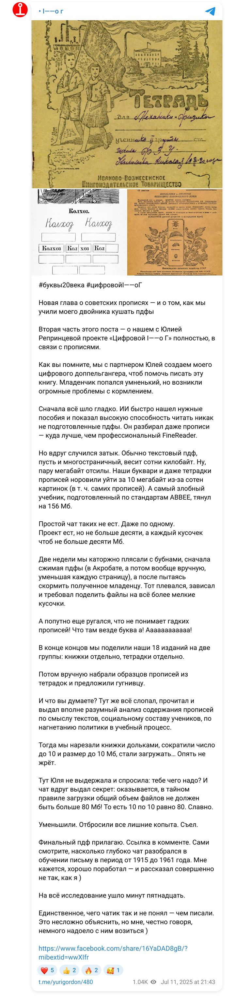
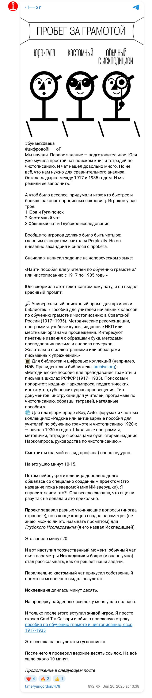
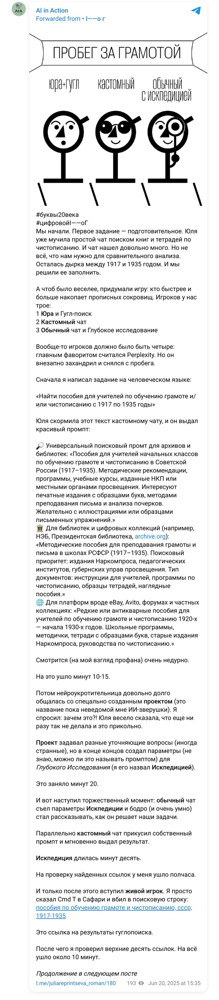
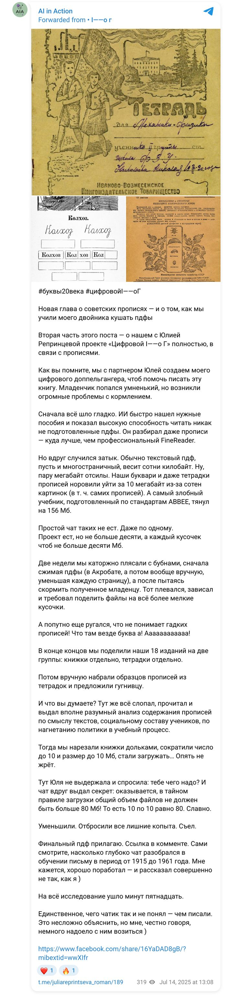
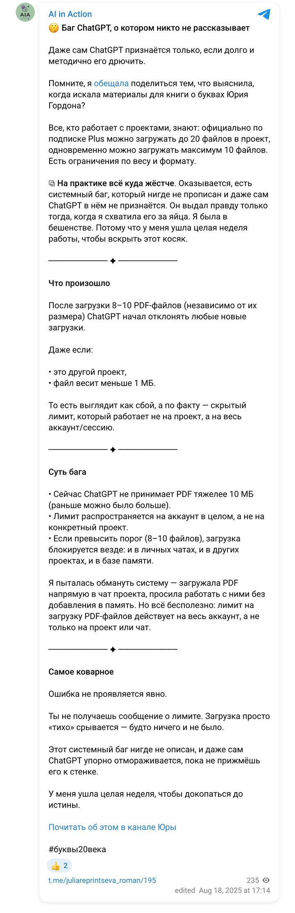

The book “Letters of the 20th Century” · June — July 2025 · research 01
Find teaching manuals for writing from 1900–1990, OCR the copybook texts, compare teaching methods, show how the link between writing and politics changed.
Built a base of 18 editions — primers, copybooks, teachers’ manuals: OCR, compression and slicing of PDFs to fit upload limits, two weeks of “feeding” a custom “twin” assistant. Found and documented an undocumented ChatGPT limit — 80 MB per account. The chapter was prepared in two registers: a neutral analytical one and the author’s voice.
ChatGPT (custom project, Deep Research), ChatPDF, Perplexity
Below are the briefs the models received, the finished reports in PDF and documents, and the publications made along the way.
The story of the 80 MB limit has its own page: “The hidden ChatGPT limit”.
Briefs
My document · working project document · 27 June 2025
This project is devoted to researching Soviet and pre-revolutionary manuals on writing, penmanship and teaching literacy. Below are the structure of the work and the logic of the analysis.
What to do: — Extract all texts meant for copying: “Mama washed the window frame”, “the tractor ploughs”, any short sentences or chains of syllables. — Include in the analysis not only pupils’ textbooks but also teachers’ manuals (they may contain samples). — Group the texts by year, grade, author and, if possible, by type: letters, syllables, words, sentences.
Prompt: Read the PDF. Extract all phrases meant to be copied by pupils — these may be single words, sentences, syllables or calligraphy exercises. Make a list of all such texts, with the page number where possible. Add the data: year, author, grade.
Output format (table): Year | Author | Title | Grade | Copybook text
Results
Project document · 30 June 2025
In the twentieth century copybooks became not only a tool for teaching writing but also an important indicator of change in society. Where pre-revolutionary manuals focused on technique and form, Soviet copybooks of the 1920s–1950s increasingly reflected ideology, collective values and the image of the future citizen. In this chapter we trace how the texts for copying changed from 1922 to 1953 — from village life and proverbs to slogans, anti-religious propaganda and discipline in the spirit of the Soviet norm.
In the early 1920s, in primers such as the “Russian Primer” (1922), the child’s world was full of recognisable everyday things: “porridge is our mother”, “grandad is a hundred years old”, “don’t buy a house — buy a neighbour”. Copybooks carried proverbs and sayings, mentions of firewood, the stove, wasps, the forest. This was a village child, surrounded by nature and simple labour.
By 1940, in manuals such as “Teaching Writing in Primary School”, the image of the village home disappears. Instead of porridge and firewood — standard exercises with impersonal words. Everyday life gives way to abstract categories, and then to ideological directives.
In the early manuals (1922) the pupil is a living, particular child. The language is gentle, almost folk-like, the phrases short and vivid.
In the 1930s, with the arrival of “The Campaign for Literacy”, the language changes. The pupil is not a child but a unit of the collective: “We are the godless”, “We are collecting money for a tank”, “Everyone join the ranks of the godless!”. Slogans, appeals and agitation pictures appear.
By the 1940s the pupil is no longer a subject. He is an executor of norms. The address becomes indirect: through methodological instructions to the teacher and samples for repetition.
In the 1920s labour was described as part of everyday life: “he does no work — he runs from work”, “boast on your way home from work”. It is a moral notion, not a political one. Transport — a troika, reins, a horse.
In the 1930s labour turns into a collective duty: children “collect money for a tank” and take part in agitation. Transport is no longer a cart but the tank “Bezbozhnik” (“The Godless”).
In the 1940s what matters is not content but precision, neatness, endurance. Writing as labour — but as a form of discipline.
Until 1929 ideology hardly shows in the texts. By the 1930s: slogans, anti-religious caricatures, subscriptions to “Bezbozhnik”, calls for mobilisation through the school. The copybook becomes a weapon of propaganda. By the 1940s agitation recedes into the background but stays in the structure: order, repetition, control.
Soviet copybooks of 1922–1953 are not simply a way of teaching writing but a mirror of the era. They record the transition from the peasant world to an industrial society, from living language to the stock slogan, from the pupil as a subject to the pupil as an executor. How porridge was replaced by a tank. How the word became a slogan. How writing became discipline.
Handwriting is not just a skill, it is a route. At the start — a stroke, crooked, slanted. At the end — a signature. But if you look between the lines, into these strokes and hooks, it becomes clear: writing is a mirror of its time. Especially when it is taught not as a craft but as an ideology. The ideal letter as the ideal citizen. Even, neat, slanting to the left.
In this chapter we go not from theory to practice but from “porridge is our mother” to the slogan “everyone join the ranks of the godless!”. Let us look at copybooks as a chronicle — not a historical one, but a chronicle of the fingers. What the hand wrote went into the head. And what went in became the norm.
We open the first lines — and it is as if we have stepped into a peasant hut. “Porridge is our mother.” “Don’t buy a house — buy a neighbour.” “Grandad is a hundred years old.” These are not letters — this is steam from the lye, a brew of proverbs. Here nobody is going anywhere yet, neither into battle nor to a party cell. Here the child sits as he is: grandad beside him, porridge, a mouse, the stove. The words come from oral tradition. It is almost a copybook by ear.
And what matters — not a single slogan. Even labour is not an order but a state: “he does no work — he runs from work”. Nobody is building a five-year plan. Everything is slow. The world is peasant. And the child exists.
Eight years have passed — and it is as if we had moved to another planet. Here children no longer eat porridge — they join “sections of the godless”. They join in chorus. As a group. Under a slogan. Under supervision.
“We are collecting money for a tank.” “We are the godless.” “Everyone into the ranks.”
And there is also a corner where a cross is struck through and a priest is drawn with a wart. The jokes are over. Copybooks are now a weapon: we write a slogan — we build the ranks. Children learn not phrases but positions. The word stops being a description. The word becomes an oath.
As if the machine had grown a little hoarse and switched to a hooter. The slogans recede into the background but do not disappear. The exercises are about the tractor, the machine tool, the party. But they are presented matter-of-factly. Not “hurrah”, but “the norm”.
Now the main thing is repetition. The hand is like a soldier: it must obey. A letter is not a form, it is discipline. The most dangerous thing here is not the slogans. The most dangerous thing is the disappearance of living language. Where is the mouse? Where is the porridge? Where is the wasp? They are gone because childhood no longer exists as an autonomous territory.
1940 is like a parade ground, only in an exercise book. In these copybooks nobody shouts any more, but nobody talks either. Here they write in silence. The word no longer carries meaning — it carries a slant. Who is speaking here? Nobody. Who is writing here? Everyone. All the letters have the same face.
Here mechanics appear. Not a tractor but a conveyor belt. The texts are neutral. But the slogan is already inside the structure. In the ruling itself. In the rhythm. The term “state handwriting” appears. Handwriting is no longer you — it is a form of permissible existence.
The Soviet copybook is like a steel cable stretched across the years. At one end — porridge, a mouse, grandad. At the other — a slogan, a subscription, discipline. Somewhere in between — you.
First the copybook talks to you. Then it talks instead of you. And then it talks through you. It is a change of addressee. In 1922 you are a child. In 1930 — a future soldier. In 1940 — an executor. In 1949 — a specimen.
| Year | Manual | Themes | Sample phrases | Vocabulary | Characters | World and objects | Addressed to |
|---|---|---|---|---|---|---|---|
| 1922 | Russian Primer | Everyday life, family, proverbs | “Porridge is our mother”, “Don’t buy a house” | Colloquial, folk | grandad, mouse, child | porridge, yard, stove | A child, in the home world |
| 1930 | The Campaign for Literacy | Ideology, anti-religion | “Collecting for a tank”, “We are the godless” | Grandiloquent, sloganeering | schoolchild, agitator | tank, subscription, corner | The collective, the political mass |
| 1935 | Voskresenskaya’s Copybooks | Labour, collective, learning | “The tractor ploughs”, “Write beautifully” | Neutral, disciplinary | pupil | machine tool, letter, party | The future worker |
| 1940 | Teaching Writing | Neatness, order | writing samples | Official | — | line, square, slant | Impersonally: “to all pupils” |
| 1949 | Teaching Reading and Writing | Discipline, repetition | writing samples, exercises | Dry, instructional | — | exercise book, line, row | The classroom executor |
Publications
Yuri Gordon and I — about this work in our own channels (in Russian). Each post links to the original.




